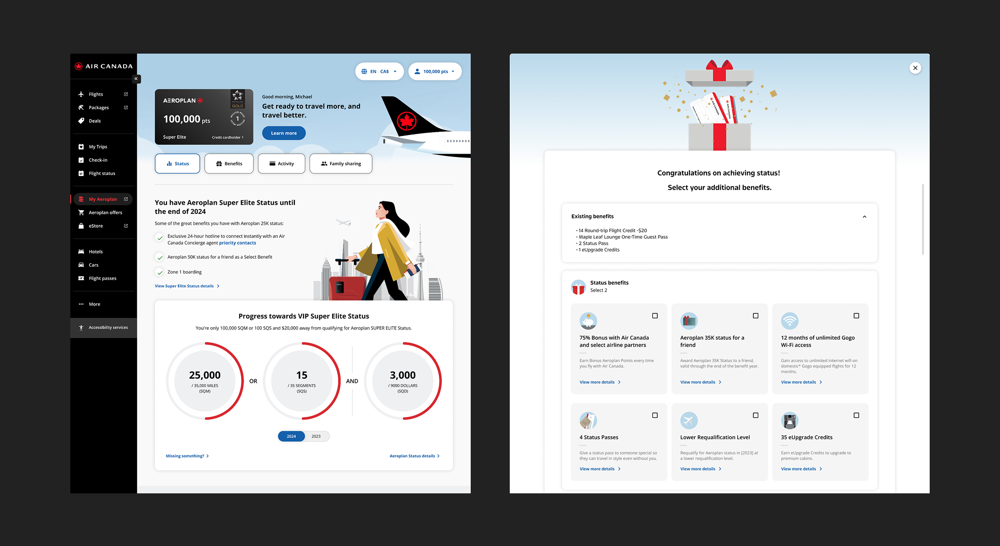
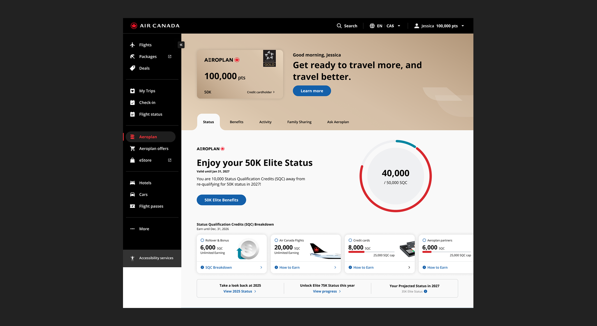
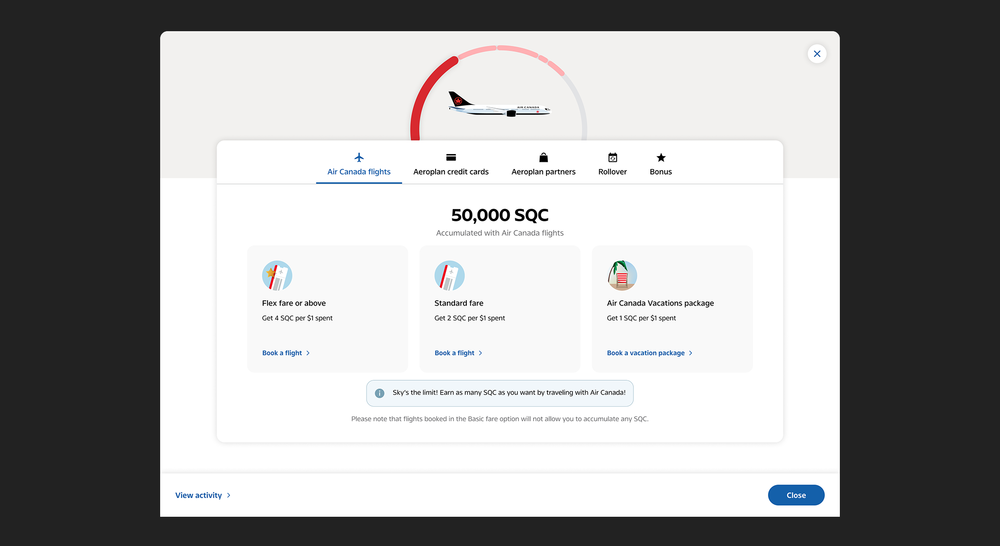
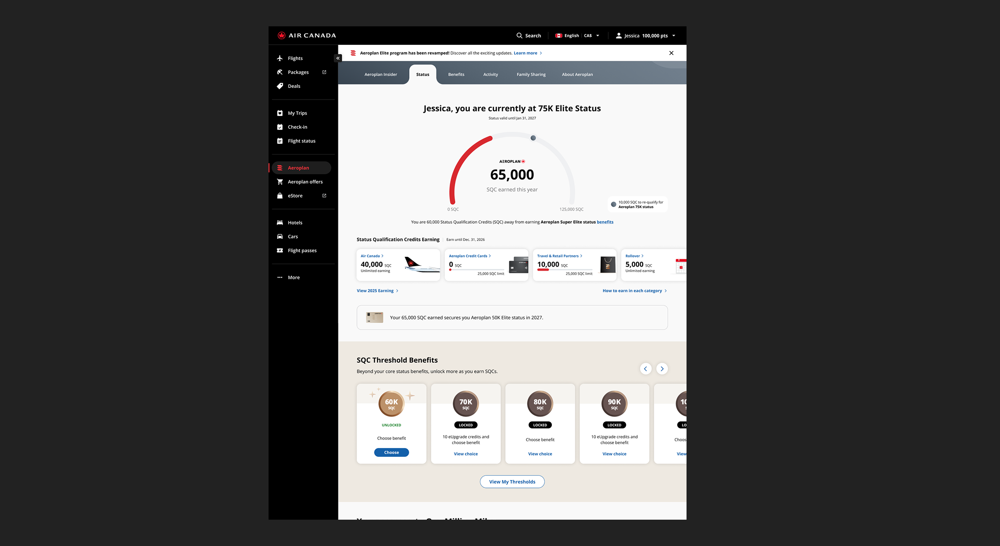
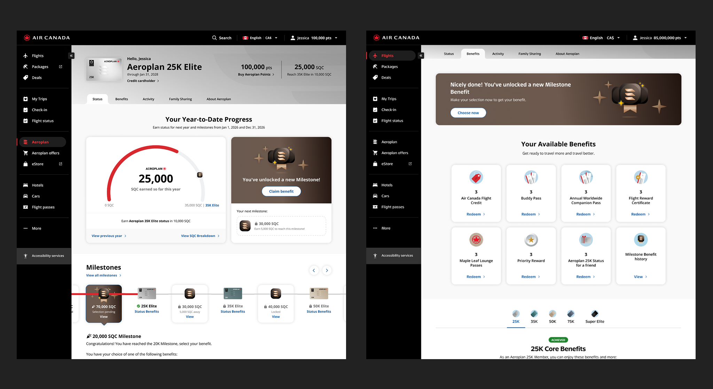
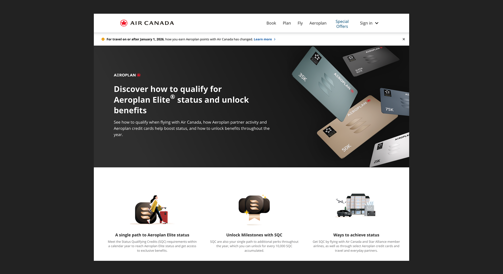

Overview
| Project | Redesign of how Aeroplan Elite members earn status, track progress, and unlock benefits under a new program model |
|---|---|
| Role | Lead designer — discovery, system design, gamification, milestone logic, content and change management pages |
| Challenge | Making a new earning model legible to members with years of muscle memory in the old one |
| Outcome | Launched 2026. Milestone-based engagement model replacing one-time annual benefit selection. |
Aeroplan Elite status is one of Air Canada's most valuable retention tools. When the business restructured how members earn status, it wasn't a UI refresh — it was a redesign of the mental model Aeroplan Elite members had built their travel habits around. A three-metric tracking system became a single currency and annual benefit selection became milestone-based unlocking throughout the year. The design had to make a new program feel intuitive to members who already knew the old one.
Role
- Team: Product, engineering, marketing, content
- Partners: Financial institution partners (premium credit card programs)
- Collaborators: 1 designer
- Stakeholders: VP, Aeroplan Elite business stakeholders, marketing and content leads
I led design across the core experience for dashboard, progress tracker, milestone system, benefit selection, and activity history from discovery through to near-final designs, before being moved to support another team ahead of final delivery.
The Old Program
Members tracked three metrics to earn status: miles, segments, and dollars. Reaching a tier meant a one-time benefit selection at the start of each year. Once selected, the only reason to engage was to maintain or upgrade your status.

The previous Aeroplan Elite dashboard
Discovery
Initial stakeholder sessions surfaced high-level requirements that weren't fully defined — design carried both the UX thinking and structural logic as it emerged.
User interviews against an early design concept revealed a consistent theme: mental model friction. Members understood the old system intuitively. The shift to SQC required them to recalibrate not just how they tracked progress, but how they thought about every transaction. Clarity and trust were the design priorities.

Early concept designs used in user interviews
The New Program
The redesigned program consolidates three tracking metrics — miles, segments, and dollars — into a single currency: SQC (Status Qualifying Credits), aligned more closely to spend. Members earn SQC across four categories, each with its own earning ratio and some with caps. A premium credit card multiplies earnings on top of existing category rates, meaning a single transaction can generate SQC from multiple sources simultaneously.
That layered earning logic was the core design challenge.

SQC earning categories and credit card multiplier logic
Gamification and Milestone Design
On top of their Status benefits, Milestone Benefits now unlock incrementally as members earn SQC, replacing the single annual selection. A progress bar paired with visible milestones makes this dynamic legible at a glance.
The milestone logic had a few states and edge cases that needed to be thought through. Returning Elite members can see a full list starting from 10K SQC, while first-time members or Base to Elite members see milestones starting at 30K SQC. If a member had earned a batch of Milestone benefits and hadn't made a selection, selections must be done chronologically. The design had to communicate earned, selected, and locked states — and unselected current and previous year selections — clearly without the experience feeling arbitrary.

Initial milestone system design
A Critical Misalignment to Pivot
When the designs reached VP review, a clear directional issue surfaced: milestones weren't visually prominent enough relative to the progress tracker. The original hierarchy treated status tracking as primary and milestones as secondary — sensible from a tracking perspective, but underselling the program's core engagement proposition.
The direction: give milestones equal visual weight. This meant rethinking the entire layout under significant time pressure. The pivot produced a stronger design — one where the milestone system reads as a feature in its own right. The progress tracker tells members where they are. The milestones tell them why it matters to keep going.

Final designs: Status, Milestone Benefits, and Benefits tab
Change Management and Content
Redesigning the experience was only part of the work. Members needed to understand what was changing before they encountered the new dashboard.
Working alongside the marketing and content team, I designed content pages built around change communication — explaining the new SQC model, what it meant for existing benefits and progress, and what members could expect going forward. The design goal was to reduce anxiety about the change, not just describe it.

Elite program change communication pages
Reflection
The VP pivot reframed what the product was actually for. Design hierarchy is also an argument about what matters — and in this case, making milestones equal to the progress bar was the right call even if the timeline to get there was tight. The deeper lesson was that designing a new mental model requires as much trust-building as it does clarity.